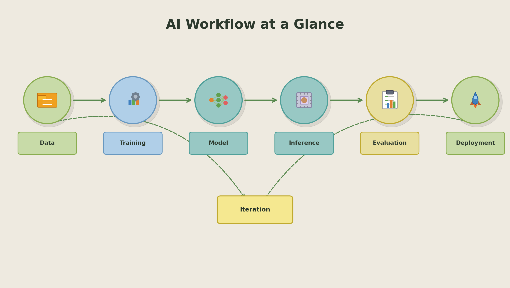
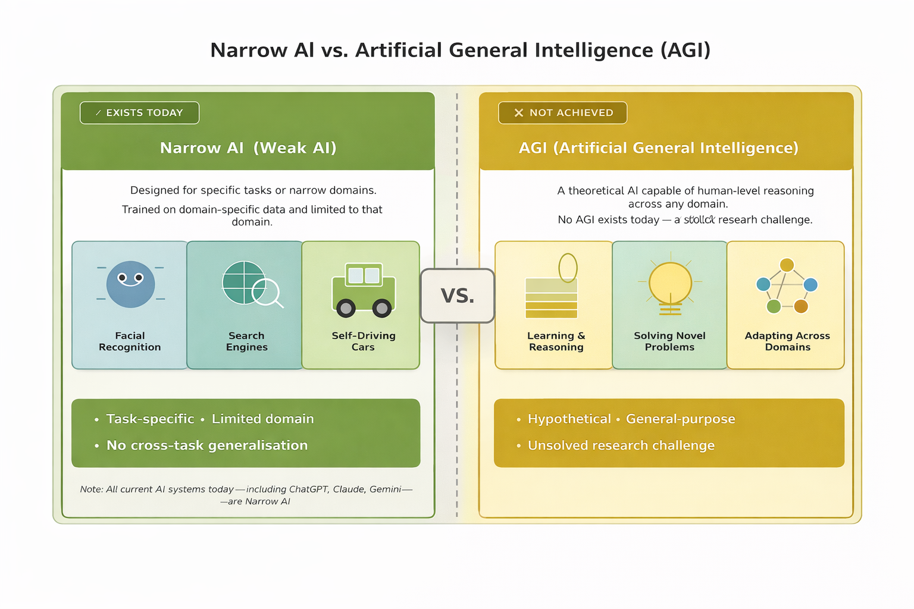
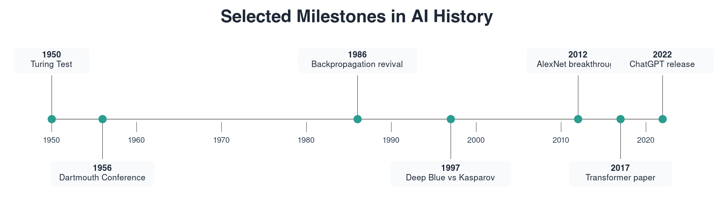
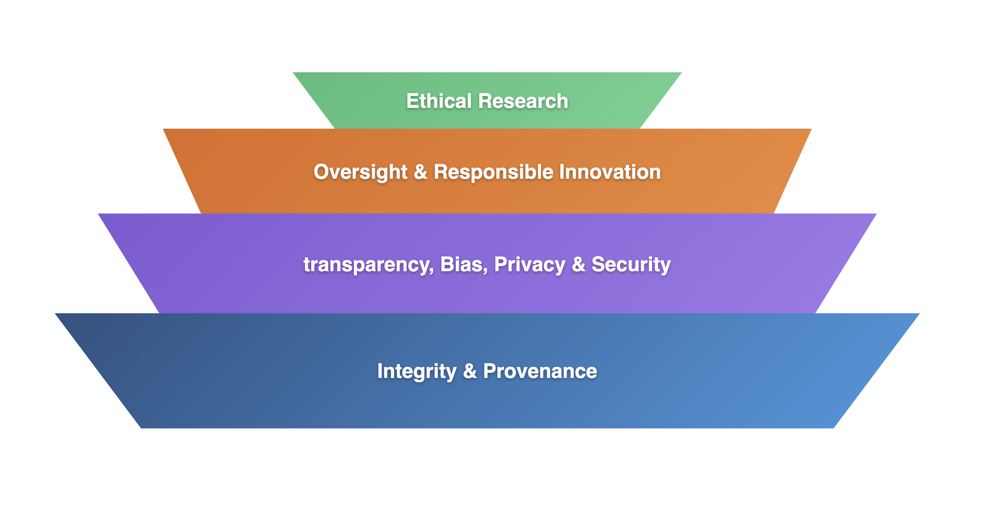

Learning Objectives
Introduction
As with our Python Orientation module, this AI orientation resource provides useful background information and serves as a reference guide before the lessons in this module. It is intended as a foundation for understanding the principles of Artificial Intelligence before we dive into code itself.
The resource introduces AI capability categories, different methodological paradigms, the concept of tensors, and our chosen Python framework for building AI and deep learning models: PyTorch. It is intended to help you gain a clear understanding of what AI is, how it works, and in which contexts it is most useful. By the end of this orientation, you should be able to engage with the upcoming AI code in this module with confidence, follow lesson explanations more easily, and contextualise your practice as you begin building models.
Defining AI
At its core, Artificial Intelligence (AI) is the product of endeavouring to simulate human intelligence processes, in silico. These processes include:
- Learning: the acquisition of information and rules for using the information.
- Reasoning: using rules to reach approximate or definite conclusions
- Self-correction: optimisation through learning from mistakes

Narrow and general AI
Narrow AI: Designed to perform a narrow task (e.g., facial recognition, internet searches, driving a car). Most current AI is here.
General AI: A system with generalised human cognitive abilities. It can solve unfamiliar problems across a wide variety of domains. At the time of writing, we have yet to truly achieve generalised intelligence in an AI system.

Systems that fall under Narrow AI can still appear highly 'intelligent', even though their behaviour is tightly constrained by their training data, objectives and operating context. A system that performs exceptionally well at one task does not automatically possess understanding or reasoning in a broader sense, and its competence does not transfer to unfamiliar problems without significant redesign or retraining.
General AI, however, implies intelligence that can extrapolate beyond knowledge, reason across different contexts and apply learning flexibly in ways that more closely resemble real human cognition.
Understanding this gap helps to distinguish both the impressive capabilities and limitations of existing AI systems, and provides essential context for discussions around automation, responsibility, safety and long-term societal impact.
A brief history of AI
AI is far from a novel concept. It has a rich history dating back to classical philosophers who attempted to describe human thinking as a symbolic system. However, the field of AI was not formally founded until 1956, at the Dartmouth Summer Research Project on Artificial Intelligence.
Fast forward to November 2022, and ChatGPT was released, making large language models accessible to the mainstream for the first time via a simple conversational interface. This marked a shift from Generative AI being largely a research or specialist tool to something the public had direct access to, sparking rapid adoption, experimentation, and debate around creativity, work, education, and the future role of AI in our lives.
Across the decades between those milestones, progress was not linear. AI experienced periods of intense optimism followed by "AI winters", where funding and expectations dropped because results could not yet match ambition. Renewed progress in data availability, GPU computing and deep learning methods, especially from the 2010s onward, created the modern wave of practical AI systems now used in research, industry and education.

What AI can and cannot do
This table covers a few of AI's most obvious strengths and limitations. The context here is largely from an LLM-centred vantage point.
| Strengths | Limitations | Scientific / Real-World Implications (Biosciences) |
|---|---|---|
| Rapidly generates code, explanations and experimental ideas. | Can produce plausible but incorrect outputs (hallucinations). | Validate outputs against primary literature, curated datasets and experimental controls before drawing biological conclusions. |
| Detects statistical patterns in large datasets. | Often learns correlations, not causation (unless specifically prompted). | Avoid causal claims without mechanistic evidence, proper controls or experimental validation. |
| Scales to high-dimensional biological data. | Sensitive to data quality, class imbalance and preprocessing choices. | Poorly curated or biased datasets can lead to misleading biomarkers or unstable models. Rigorous data cleaning and validation are significant. |
| Produces confident, fluent reasoning across domains. | Confidence does not always equal correctness, and can sometimes mislead the user into fallacy. | Evaluate models using quantitative metrics, cross-validation and independent test sets rather than subjective plausibility. |
| Can summarise literature and integrate multiple sources quickly. | May oversimplify nuance or miss domain-specific subtleties. | Use outputs as a synthesis tool, not a substitute for domain expertise and critical appraisal. |
| Identifies complex, non-linear patterns beyond simple statistics. | Limited transparency unless explicitly analysed. | Apply interpretability methods and biological reasoning to assess whether learned features are scientifically meaningful. |
| Automates repetitive analytical and coding tasks. | Dependent on training data and prior knowledge. | Check tool versions, database updates, and evolving standards in genomics, imaging and clinical research. |
| Generates multiple modelling or analytical strategies. | May reflect biases present in training data. | Assess demographic, sampling and experimental bias to avoid inequitable or non-generalisable findings. |
AI and its components:
Modern AI systems comprise the following three components:
- Data: The fuel for learning and rule-making. This can be text, images, code and / or numbers: in any quantity.
- Algorithms: The engine of an AI model. Mathematical structures (like Neural Networks) that process the data.
- Computing Power: The physical resource that a model requires to compute, predict and calculate. These include Graphics Processing Units (GPUs) and Tensor Processing Units (TPUs) designed to perform the complex calculations required for training.
Categorising AI
There are several terms that you will encounter, many of which are blurred or incorrectly conflated with other terminology. It helps to be precise here:
Machine learning, deep learning, natural language processing and computer vision are not four equivalent "types" of AI.
They belong to different categories (some are methods and some are application domains).
By capability
- Narrow AI (Weak AI): Systems designed for specific tasks (all practical AI today).
- General AI (AGI): A hypothetical system with broad, human-like problem-solving ability across domains.
- Superintelligence (ASI): A hypothetical level beyond human cognitive performance.
By domain (the kind of task it works on)
- Natural Language Processing (NLP): Understanding and generating human language.
- Computer Vision (CV): Understanding images and video.
- Speech AI: Speech recognition, synthesis, and audio understanding.
- Robotics AI: Perception, planning, and control for physical systems.
By approach (how an AI system is built)
- Symbolic AI (Rule-based AI): Uses explicit rules and logic.
- Machine Learning (ML): Learns patterns from data instead of relying only on hand-written rules.
- Deep Learning (DL): A subset of ML using multi-layer neural networks.
- Reinforcement Learning (RL): Learns through trial-and-error using rewards and penalties.
- Generative AI: Models that generate new content (text, code, images, audio, video).
For emphasis
- ML and DL are mostly approaches.
- NLP and CV are mostly domains.
- A modern system can combine several at once (for example, a vision-language model can use DL + NLP + CV + Generative AI).
Generative AI
Generative AI refers to a class of AI systems that learn the underlying structure of data in order to generate new, original content (such as text, images, audio or code). Rather than simply classifying or labelling inputs, these models produce novel outputs by synthesising patterns learned from large datasets.
Transformer – A neural network architecture that uses self-attention to model relationships between all tokens in a sequence simultaneously.
GPT (Generative Pre-trained Transformer) – A large language model built on the transformer architecture, pre-trained to predict the next token in text and capable of generating new content.
Generative AI represents a conceptual shift in how AI systems are designed and used. Traditional discriminative models are trained to recognise or classify existing data, answering questions such as whether an image contains a cat, or whether or not an email is spam. Generative models, by contrast, learn the underlying structure of data itself, allowing them to create new examples that resemble what they were trained on, such as generating images or writing text. Generative models can even produce code in multiple different programming languages, generate music, speech or even video.
Modern Large Language Models (LLMs), such as GPT-5 and Gemini, are prominent examples of Generative AI. Rather than retrieving memorised responses, these models generate new outputs by synthesising patterns learned from vast amounts of data. This enables them to do all of the above, and even perform multi-step reasoning in ways that feel flexible and creative, even though the outputs are entirely grounded in statistical learning rather than true understanding: even if it may seem that way to the user.
Popular LLMs
This table lists a few of the popular LLMs at he time of writing. All information is contextual and updated as of February 2026.
| Model | Developer | Architecture | Multimodal | Pricing | Positioning |
|---|---|---|---|---|---|
| GPT-5.2 | OpenAI | Dense transformer, tool-optimised | Yes | Premium tier | Frontier reasoning, coding, agent workflows |
| GPT-5.2-Instant | OpenAI | Dense transformer (efficient variant) | Yes | Lower-cost tier | Fast, cost-efficient deployment |
| Claude 4.6 Sonnet | Anthropic | Dense transformer, Constitutional AI | Yes (text + image) | Mid-tier | Long-context reasoning, structured outputs |
| Claude 4.6 Opus | Anthropic | Large dense transformer | Yes | Premium tier | Deep multi-step reasoning |
| Gemini 3.1 Pro | Google DeepMind | Multimodal-native transformer | Yes | Usage-based / enterprise | Very long context, strong multimodal integration |
| Gemini 3.1 Flash | Google DeepMind | Dense transformer (efficiency-focused) | Yes | Lower-cost tier | Speed-optimised production model |
| LLaMA 3.1 (405B) | Meta | Dense transformer (open-weight) | Text (multimodal via add-ons) | Open weights (infra cost) | Large open research model |
| Mixtral 12x22B (MoE) | Mistral AI | Sparse Mixture-of-Experts transformer | Text | Open / API | Efficient expert routing architecture |
| Command R++ | Cohere | Dense transformer (retrieval-optimised) | Text | Enterprise pricing | Retrieval-augmented enterprise tasks |
\*Pricing changes frequently and depends on input/output token mix.
Terms used in the table, above:
- Dense Transformer – All model parameters are active for every token processed.
- Mixture-of-Experts (MoE) – Only a subset of the network is activated per token, improving efficiency.
- Multimodal – Can process inputs beyond text, such as images, audio or video.
- Constitutional AI – Alignment method that uses explicit guiding principles during training.
- Open Weights – Model parameters are publicly downloadable and self-hostable.
- Retrieval-Augmented – Designed to integrate external documents or databases during generation.
- Premium / Mid-tier / Lower-cost – Relative pricing categories; exact costs depend on usage and token volume.
The ethics of AI
As AI becomes embedded in science, medicine and industry, ethical considerations must sit alongside technical progress. Ethical AI in research means building systems that are reliable, fair, transparent, accountable, secure and aligned with long-term human benefit.

Bias and fairness
AI systems learn from historical data, which may contain social, cultural or institutional biases. Without careful evaluation, models can reproduce or amplify inequalities. Ethical AI requires diverse datasets, bias detection and active correction.
Transparency and explainability
Many modern AI systems operate as complex black boxes. In research and high-stakes domains such as medicine or engineering, users must be able to understand, document and scrutinise how models reach conclusions.
Data integrity and provenance
AI models are only as reliable as the data used to train them. Ethical practice includes ensuring informed consent, anonymisation where required, careful documentation of data origins and critical assessment of data quality.
Human oversight and responsibility
AI does not replace accountability. Researchers remain responsible for interrogating model outputs, validating predictions and preventing harmful misapplication. AI should augment, not replace, human expertise.
Security and privacy
Sensitive datasets - from patient records to unpublished research - require secure storage, controlled access and compliance with data protection laws such as GDPR. Internal deployment and private infrastructure can reduce risk.
Sustainability and environmental impact
Large AI models can carry significant energy and carbon costs. Responsible use includes right-sizing models to tasks, avoiding unnecessary retraining and considering environmental impact in deployment decisions.
Equity and access
If only well-funded institutions can access advanced AI systems, inequalities in research capability may widen. Ethical AI includes promoting accessibility, open alternatives and fair resource allocation.
Alignment and misuse prevention
As AI systems grow more autonomous, their objectives must align with human values and societal norms. Safeguards are needed to prevent misuse, including misinformation, surveillance and harmful automation.